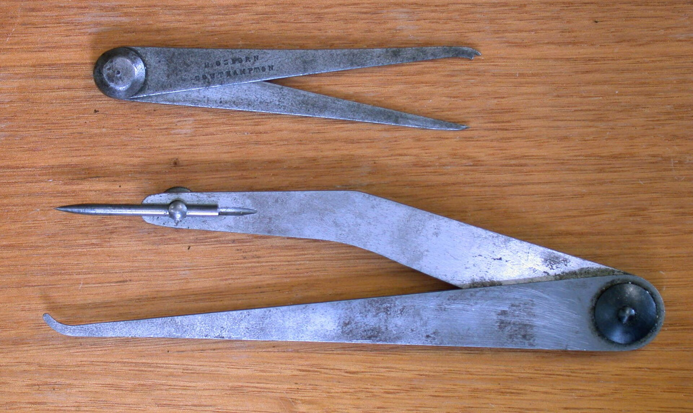
Open largerJenny callipers
Also called odd-leg callipers. Their distinctive unequal legs help students recognise a tool used for layout work such as marking a line parallel to an edge.
Photo: Glenn McKechnie, CC BY-SA 3.0.
Student visual reference
Use these images to recognise common marking, measuring, forming and cutting tools. The image identifies the tool; teacher demonstrations, approved procedures and workshop instructions control how it is selected and used.
Tool form can vary between manufacturers and workshops. Do not infer settings, guards, permissions or operating steps from a photograph. Use only the tool and setup demonstrated and approved by your teacher.

Open largerAlso called odd-leg callipers. Their distinctive unequal legs help students recognise a tool used for layout work such as marking a line parallel to an edge.
Photo: Glenn McKechnie, CC BY-SA 3.0.
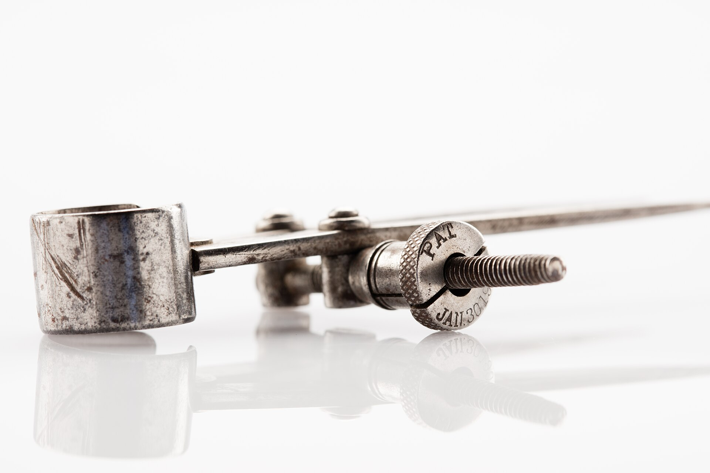
Open largerTwo pointed legs make this tool visually distinct from callipers. Follow the teacher-issued task and demonstration for any transfer or circle-marking work.
Photo: Auckland Museum, CC BY 4.0.
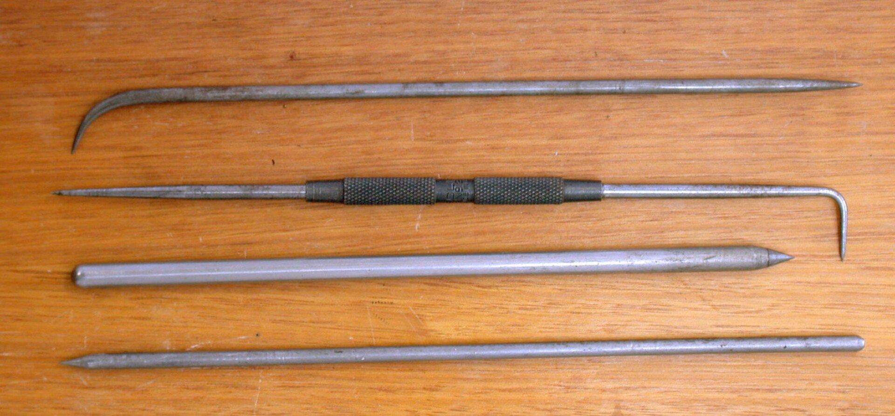
Open largerScribes have hardened points for fine layout lines on suitable surfaces. Select and handle the demonstrated type carefully because the point is sharp.
Photo: Glenn McKechnie, CC BY-SA 3.0.
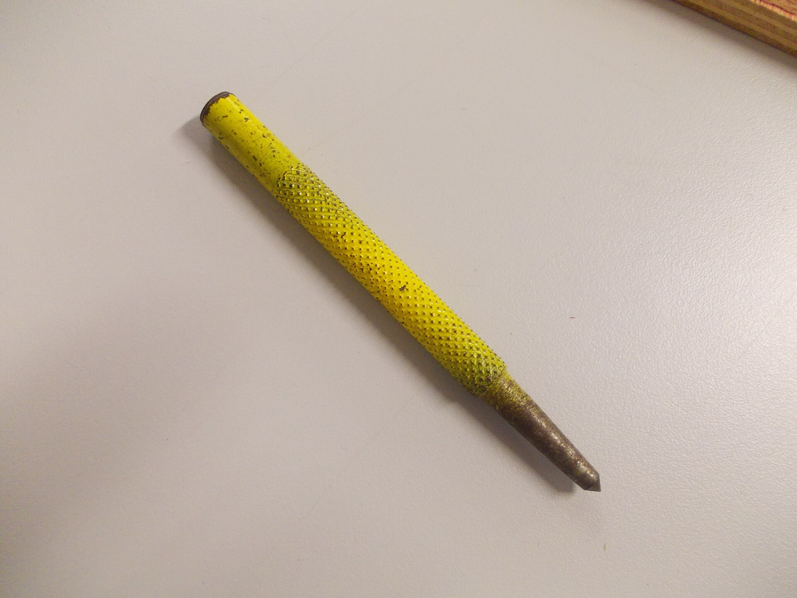
Open largerThis photograph shows one example. Centre punches can differ in size and form; use the teacher-selected tool for the approved marking task.
Photo: Luke Milburn, CC BY 2.0.
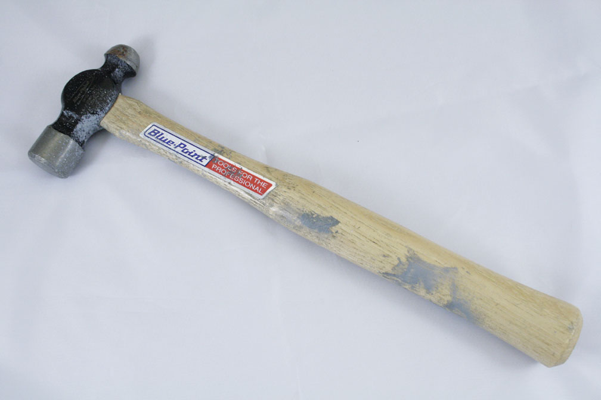
Open largerThe rounded pein distinguishes this metalworking hammer from a claw hammer. The teacher determines the suitable hammer, support and process.
Photo: Connie Posites, CC BY-SA 2.0.
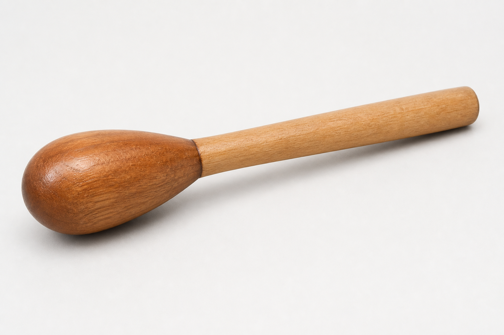
Open largerThe smoothly rounded wooden head is the key recognition feature. The image does not show a forming sequence or an approved work setup.
AI-generated identification reference; visually checked for tool form.
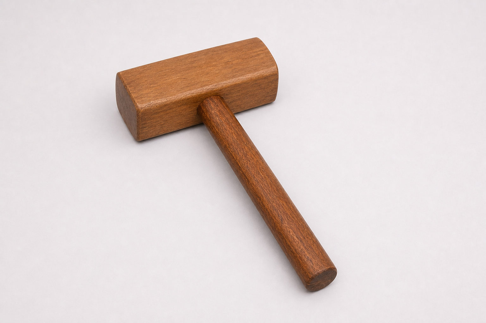
Open largerThe broad wooden striking faces distinguish this tool from metal-headed hammers. Follow the teacher demonstration for the actual forming task and support.
AI-generated identification reference; corrected and visually checked for head orientation.
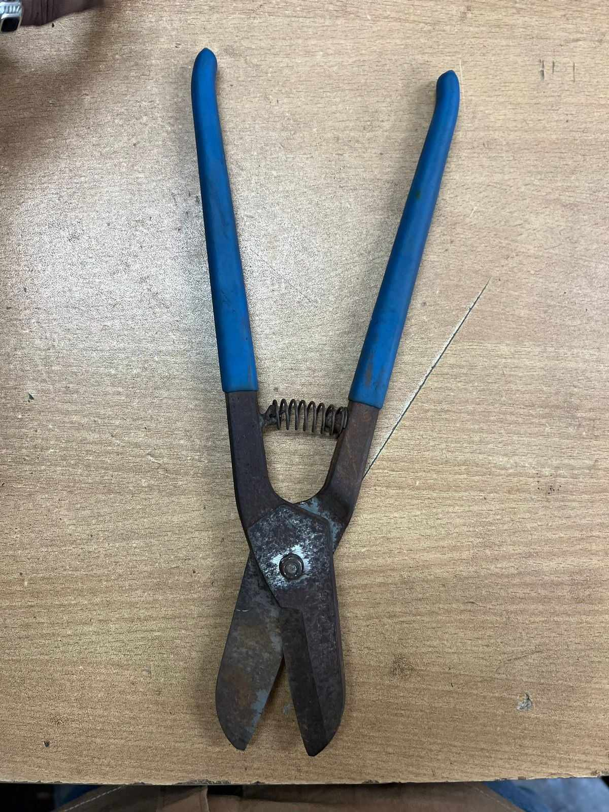
Open largerHand-operated blades identify this sheet-metal cutting tool. Snip type and cutting direction must match the demonstrated task.
Photo: Zkabirkhan, CC0 1.0.
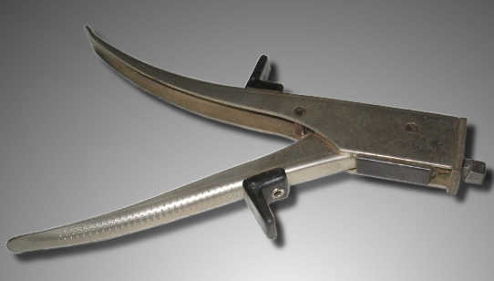
Open largerThe compact punch-and-die head removes small pieces of sheet metal. This photograph is for recognition, not a substitute for a cutting demonstration.
Photo: Richard Frantz Jr, public domain.
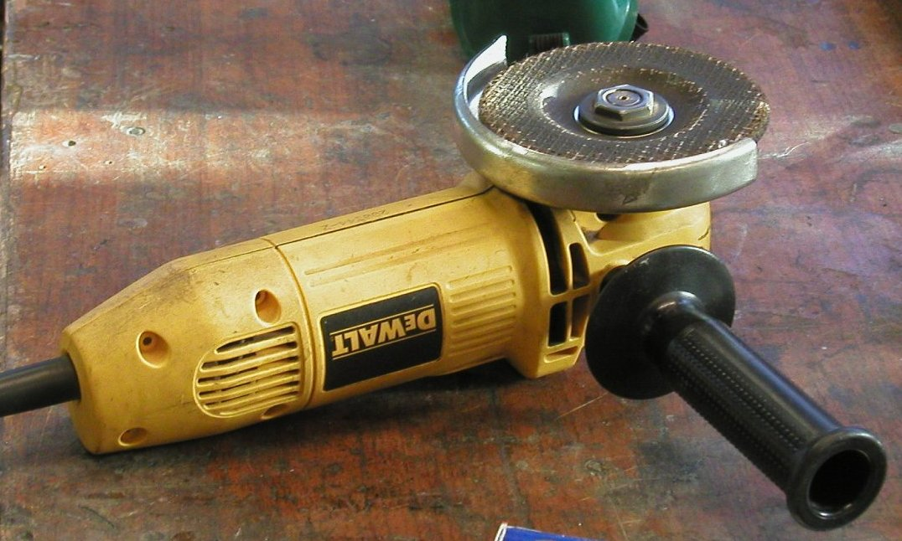
Open largerUse only after specific training, permission and a teacher-approved wheel, guard, workholding method and setup. This image shows identification only.
Photo: soulfish, CC BY-SA 2.0.
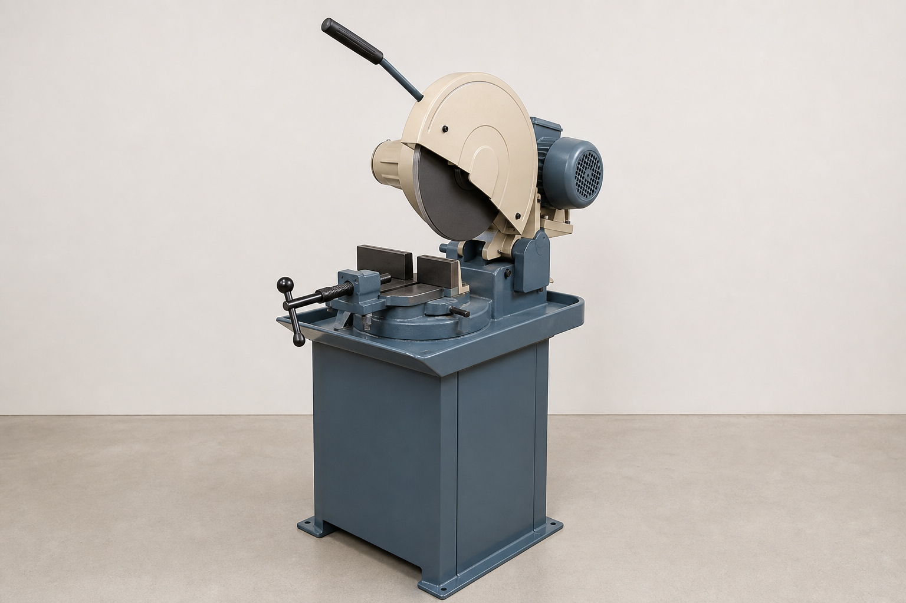
Open largerA guarded pivoting head and built-in vice identify this machine family. The actual Brobo or cut-off saw must be used only with training, permission and the workshop’s demonstrated controls.
AI-generated identification reference; visually checked for guard, vice and at-rest presentation.